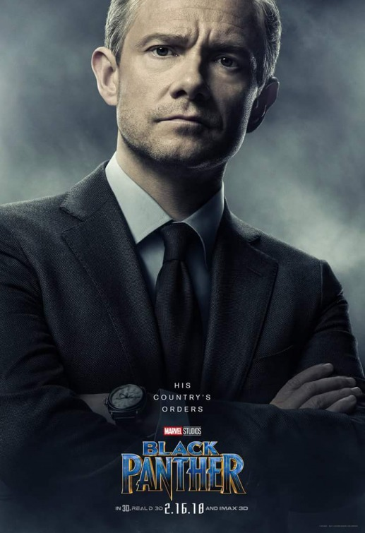

Token White Friend on Black Panther: It's Great to Finally be Represented in A Major Motion Picture
March 2, 2018

LOS ANGELAS- Derek Hosser simply could not contain his excitment upon exiting the AMC theater after a screening of Marvel's Black Panther. Beaming from ear to ear Hosser explained how happy he was to finally have a token white character represented on the silver screen. "It's just so great to finally have a character in a major Hollywood movie that looks and acts like me." says Derek. When actor, Martin Freeman, was asked about the passionate reaction to his character he stated that "I knew my role would cause a stir in the public zeitgeist but I could have never have expected such a positive reaction."